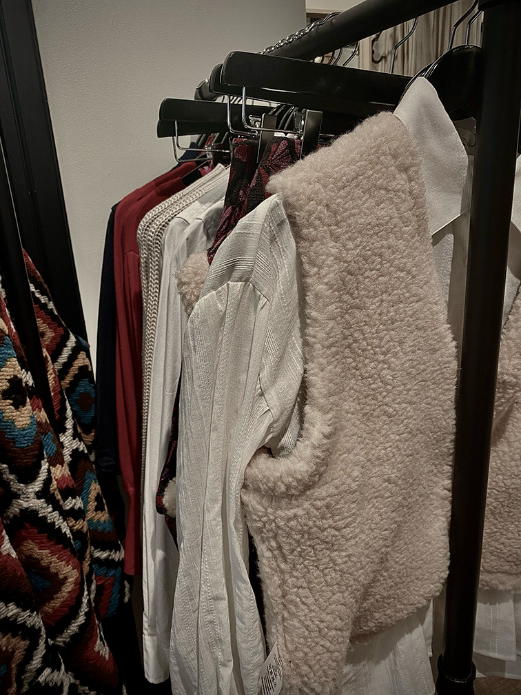
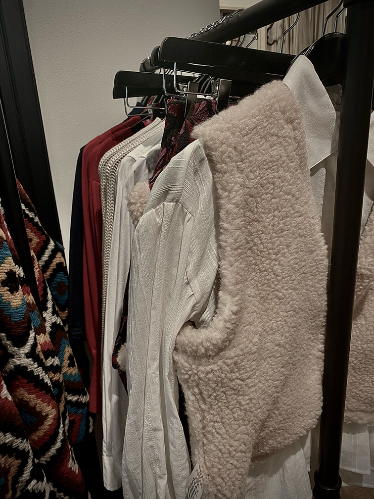

Thrift Tips
Weet je nou niet zo goed waar je moet beginnen bij vintage winkelen. Of heb je het idee dat je altijd alle leuke kleding items voorbij loopt. Dan heb ik hier een paar goeie tips voor jou, zodat je altijd iets kunt vinden wat bij jou past.
Zoek tips
Het zoeken naar kleding in vintage winkels kan soms lastig zijn. Je ziet waarschijnlijk veel verschillende kleuren en patronen en raakt daardoor een beetje overprikkeld. Gelukkig ben je niet de enige en zijn er daarom veel tips om je hier bij te helpen.
- Belangerijk is om een focus punt te hebben. Weten hoe je dat goed doet klik dan hier
- Doelen zetten met wat je wilt vinden is een erg belangerijke stap bij leuke items vinden. Wil je weten hoe je dat goed doet klik dan hier.
- Ga op de kleuren af die jou het meeste aanspreken. Weten wat hier mee wordt bedoelt klik dan hier.
- Kijk bij de stoffen waarvan je weet dat jij ze fijn vind. Weten wat hier mee wordt bedoelt klik dan hier.
Het kan natuurlijk ook zijn dat je liever tweedehands kopt, omdat je kinderarbeid zo veel mogelijk tegen wilt gaan. Wil je nu weten wat veilige brands zijn, omdat je het belangerijk vind dat er geen kinderarbeid is gehanteerd in het proces van het maken van kleding? Klik dan hier.

Kleding eigen maken
Soms is het lastig om kleding te vinden die jou goed past qua stijl en vormaat. Daarom is het altijd handig om te weten hoe ook jij altijd kan slagen in vintage winkels, maar ook in je eigen kleding kast (waarom weggooien als je er weer wat leuks van kan maken).
- Kies een stijl die jij het prettigste vind om te dragen. Er zijn er een hele boel dus hier kan je tips vinden om jou personlijke stijl makkelijk te vinden of om nieuwe uit te probern.
- Heb je nou wel je eigen stijl, maar wet je niet hoe je vintage kleding daar in kan betreken? Hier heb ik goeie tips voor je om dit makkelijk te doen.
- Heb je nou hele leuke items gevonden, maar is het niet in jou maat? Klik dan hier voor uitleg hoe je dit probleem kan oplossen
- Heb je nou leuke items gevonden maar is het net niet jou stijle en zou je er wel wat mee willen doen? Hier heb ik leuke tips om van gevonden items altijd een pareltje te maken.

Focus punten
Als je gaat vintage shoppen is het altijd goed om bepaalde focus punten te hebben. Vintage winkels zijn namelijk niet zo ingericht als normale winkels, omdat ze geen colecties hebben om zich aan vast te houden. Van de meeste producten is er meestal maar een tenzij je geluk hebt. Vaak proberen vintage winkels wel alles op soort en kleur te delen vaak helpt dit al heel erg bij het vinden van wat leuks. Probeer te kijken in secties en let niet op de delen waarvan je zeker weet dat het je niet aan spreekt. Zie je nou iets wat je heel mooi vind ga dan in die omgeving kijken vaak hangen er veel meer items die gelijk zijn aan dat item dat je aan spreekt.
Doelen zetten
Als je gaat vintage shoppen doe dit dan met doelen net als dat je normaal gaat shoppen, maar doe dit zeker niet te specefiek een kleding item dat je online vond ga je zeker niet zo snel terug vinden in een vintage winkel. Wat je bevoorbeeld wel kan doen is bijvoorbeeld heen gaan voor leuke spijker jasjes om bijvoorbeeld te beschilderen. Zo kan je ook gerichter in een vintage winkel kijken en maakt een vlekje ook niet zo veel uit.
Kleuren
Om te helpen bij focus punten is op kleuren letten ook erg handig. Vaak sorteren vintage winkels hun kleding namelijk ook op kleur. Als jij weet welke kleure jou het beste staan of waar jij je het prettigste in voelt is het heel goed om hier gebruik van te maken. Zelf zou ik bijvoorbeeld nooit op rood af stappen, omdat ik dat nooit draag. Het klinkt heel simpel, omdat je dit normaal ook doet in een gewone winkel, maar omdat vintage winkels vaak wat voller en kleiner zijn vergeet je dit al sneller te doen.
Stoffen
Iets anders om je op te focusen zijn de soort stoffen. Ik ben iemand die heel erg van zachte stoffen houd en loop daarom sneller op truien en vestjes af met zachtere stofjes. Als het voor mij al oogt als kriebelig of onpretig dan zal ik er ook niet zo snel op afstappen. Dit zorgt er voor dat je in de omgevingen gaat kijken van dingen die jij wel lekker vind zitten en hier vind je al meer wat bij jou past dan iets waarvan je zeker weet dat je het niet prettig vind.
 

Welke stijl?
Er zijn zo veel kleding stijlen allemaal leuk en uniek op zijn eigen manier, maar welke past het beste bij jou en hoe kom je daar achter?
Om te beginnen is het goed om te kijken naar welke stijlen er alemaal zijn en welke jou het meeste aanspreekt. Ik ga ze natuurlijk niet allemaal opnoemen, maar wel de meest basic stijlen hier van veel kunnen namelijk binnen deze stijl nog varieren.
- preppy
- Grunge
- Academia
- Casual
- Boho
- Minimalist
- Street style
Vervolgens is het goed te kijken naar wat je al in je kast hebt liggen. Van uit hier kan je gaan kijken naar wat je vaak draagt en waarom dat zo is. Je zou hier mee dan weer onderzoek online kunnen gaan doen met welke stijlen daar bij passen.
Styling tips
Als je iets leuks hebt gevonden in een vintage winkel, maar niet weet hoe je het moet dragen is het altijd goed om gewoon te beginnen bij de basics. Stel je hebt een leuk jasje gevonden, maar je weet niet zo goed wat je hier bij moet doen begin dan met wat je weet als bassis dat bij jou past. Ik ben persoonlijk meer van de light academia qua kleding stijl dus voor mij zou de basics zijn een lichtbruine pantalon en een wit shirt/blouse. Van uit hier ga ik kijken naar of er nog wat bij moet qua lagen of dat het zo goed is. Daarna ga ik kijken naar grotere bijpassende items, zoals tassen en schoenen. van uit hier is het makkelijker om finishing touches toe te voegen met bijpassende sieraden of haar acceswoires zoals een haar klip of een leuk hoedje.
Ook heel slim om te doen mocht je er echt niet uitkomen is om in jou stijl op pintrest een soort gelijk item op te zoeken. Pintrest is als het gaat om kleding stijlen echt mijn redder in nood.

Niet jou maat?
Wat nou als je iets heel leuks hebt gevonden en het is niet jou maat. Als het te groot is zijn er veel mogenlijkheden en kan je het zelfs laten in nemen Laura Dols heeft daar zelfs al aan gedacht in hun winkel zelf want het is toch wel erg jammer als je het daarom niet meer kan aanschaffen. Te klein wordt wat lastiger, maar ook daar kan je een stukje bij laten maken de vraag is alleen of het dan nog mooi wordt? In mijn ogen wel want dan maak je juist iets wat uniek is, omdat je het op zo veel verschillende manieren kan doen. Je zou bijvoorbeeld bij een leuke trui de zijkanten open kunnen maken en hier kant tussen laten naaien of zelf er in naaien. Ook zou je de rug van een topje open kunnen maken en hier een lacing effect in laten zetten. Of als je meer van een eddgy grunge look houd het met een soort kettingen weer aan elkaar kunnen maken om je toch wel weer de ruimte te geven.
Op het internet staan zo veel leuke ideeen om het zelf uit te proberen die helemaal niet moeilijk hoeven zijn. Plus vaak kan je het ook laten doen bij leuke naai winkeltjes en ook zij kunnen met jou verschillende opties en mogelijkheden bespreken.
Maak het uniek
Soms vind je hele leuke dingen maar is het net niet helemaal jou stijl of heb je iets leuks gezien online en wil je dat het daar meer op lijkt. En eigenlijk is dat geen probleem kleding is heel makkelijk te vermaken en uniek te maken. Of je nou heel geskild bent met naaien of juist helemaal niet zijn er heel veel mogelijkheden. Het internet staat vol met mensen die je stap voor stap kunnen uitleggen hoe je stap voor stap iets kunt maken dus neem zeker een kijkje.
Alvast een paar dingen die je zou kunnen doen is bijvoorbeeld een randje kant aan het uiteinden van je mouwen vast maken, of met veiligheidsspelden een patroon maken op de achterkant van een trui, nog een hele simpele manier is kleine gatjes te knippen en deze oprekken voor een destresed look. Wees creatief en probeer dingen uit het hoeft echt niet te ingewikeld te zijn (je kan altijd veel meer dan je denkt).